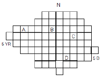
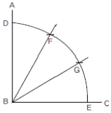
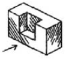
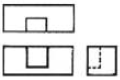
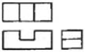
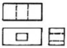
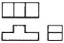

컴퓨터그래픽스운용기능사 (2013-07-21 기출문제)
1과목: 산업디자인 일반
1. 다음 중 마케팅 활동의 주요 요소와 거리가 먼것은?
- 시장 조사
- 제품 생산 계획
- 디자인 연구소 설립
- 광고 및 판매 촉진
(정답률: 85%)

2. 실내 요소의 기능에 관한 설명 중 틀린 것은?
- 바닥 - 물체의 중량이나 움직임을 지탱해 준다.
- 천장 - 빛, 음, 습기 등 환경의 중요한 조절 매체이다.
- 벽 - 내부와 외부의 공간을 구획한다.
- 창문 - 가구배치를 위한 배경이 된다.
(정답률: 72%)
3. 비영리 광고가 아닌 것은?
- 공공 광고
- 정치 광고
- 기업 광고
- 이념 광고
(정답률: 83%)
4. 자본주의와 과시적 소비가 지나치게 밀착되는 현상에 대한 저항으로, 좀 더 환경적이고 인간적인 디자인 철학을 제시한 조형 운동은?
- 아르누보
- 독일공작연맹
- 미술공예운동
- 반디자인 운동
(정답률: 60%)
5. 모형의 종류 중 시작품 생산용으로 최초의 원형 모형이 되는 것은?
- 연구 모델(Study Model)
- 스케치 모델(Sketch Model)
- 스킴 모델(Skim Model)
- 프로토타입 모델(Prototype Model)
(정답률: 53%)
6. 이상적 모더니즘을 탈피하여 1930년대 미국에서 소비자와 비즈니스를 위한 상업적 모던 디자인이 추구했던 형태의 특징은?
- 유선형
- 순수형
- 표준형
- 기하학적형
(정답률: 39%)
7. 편집 디자인에서 원고의 내용과 중요도에 따라 각각 분할하여 배열하는 것은?
- 포맷
- 라인 업
- 타이포그래피
- 마진
(정답률: 80%)
8. 신문 광고의 장점이 아닌 것은?
- 시기의 선택이 자유롭다.
- 인쇄나 컬러의 선명도가 좋다.
- 다양한 독자층과 광대한 보급성으로 전국적인 광고에 적합하다.
- 배포 지역이 명학해서 지역별 광고에 편리하다.
(정답률: 82%)
9. 디자인의 조형요소와 거리가 먼 것은?
- 유행
- 형태
- 색채
- 재질감
(정답률: 83%)
10. 편집 디자인의 분류 기준과 내용이 잘못 연결된 것은?
- 형태별 분류 : 단행본, 잡지, 전문서적 등
- 표현 양식별 분류 : 내용, 목적에 따른 표현 등
- 간행주기에 따른 분류 : 일간, 주간, 계간 등
- 지질에 따른 분류 : 한지, 양지, 판지 등
(정답률: 50%)
11. 시장세분화의 주요변수가 아닌 것은?
- 지리적 변수
- 인구 통계적 변수
- 미래적 변수
- 사회 심리적 변수
(정답률: 67%)
12. 사람과 사람 간에 시그널, 사인, 심벌이라는 기호에의해서 의미를 전달하는 디자인 분야는?
- 시각 디자인
- 제품 디자인
- 환경 디자인
- 공예 디자인
(정답률: 87%)
13. 다음 중 렌더링에 관한 설명이 틀린 것은?
- 완성될 제품에 대한 예상도이다.
- 실물이 가진 형태, 색채, 재질감을 충실히 표현한다.
- 제시용 렌더링이란 부품의 구조와 기능을 설명 할 목적으로 쓰인다.
- 최종 디자인을 결정하려는 표현 전달의 단계이다.
(정답률: 55%)
14. 디스플레이(전시 디자인)의 목적 중 교육적 기능을 가장 잘 설명한 것은?
- 새로운 문화공간으로서 놀이 환경을 조성한다.
- 신상품과 구상품에 대한 연관성을 주지시킨다.
- 타 상점, 타 브랜드와의 이미지 공통화를 꾀한다.
- 신상품의 소개, 상품의 사용법, 가치 등을 미리 알린다.
(정답률: 66%)
15. 실내 디자인에 사용되는 각 재료의 장점이 아닌 것은?
- 목재 : 흡음성과 절연성이 있다.
- 종이 : 거친 시공을 가릴 수 있다.
- 직물 : 보온성이 높고 방음성이 있다.
- 자연석 : 보온성과 흡음성이 좋다.
(정답률: 57%)
16. 다음 중 선에 관한 설명이 틀린 것은?
- 점이 이동하면서 그 자취가 선을 이루게 된다.
- 기하학적인 선은 완벽하고 단정한 느낌을 준다.
- 프리핸드 선은 딱딱한 직선의 느낌을 수반한다.
- 사선은 움직임이 강하게 느껴진다.
(정답률: 66%)
17. 기업에서 실시하고 있는 C.I란?
- 회사의 경영 방침
- 상품의 개발 전략
- 제품 디자인 개발 정책
- 기업의 전략적 이미지 통합
(정답률: 86%)
18. 형태 심리학자들이 연구해 낸 형태에 관한 시각의 기본 법칙과 설명이 틀린 것은?(오류 신고가 접수된 문제입니다. 반드시 정답과 해설을 확인하시기 바랍니다.)(오류 신고가 접수된 문제입니다. 반드시 정답과 해설을 확인하시기 바랍니다.)
- 근접성 - 비슷한 모양의 형, 그룹을 하나의 부류로 보는 것
- 유사성 - 비슷한 모양이 서로 가까이 놓여있을 때 그 모양을 합하여 동일한 형태로 보는 것
- 연속성 - 형이나 형의 그룹이 방향성을 지니고 연속되어 보이는 것
- 폐쇄성 - 형태에 대한 지속적이고 고정적인 인식을 하는 시지각의 항상성을 의미하는 것
(정답률: 60%)
19. 옵아트(Op art)에 관한 설명으로 틀린 것은?
- 최소한의 조형수단으로 제작한 회화나 조각을 가리킨다.
- 생리적 착각의 회화이며 망막의 예술이다.
- 흑과 백을 사용한 형태 중심의 작품들이 중심을 이루었다.
- 색채 원근감을 도입하여 시각적 일루전(Illusion)을 얻었다.
(정답률: 41%)
20. 고대국가의 건축에서 나타난 특징으로 볼 수 없는 것은?
- 거대함에서 비롯되는 기념비적 특성이 있다.
- 아치와 돔 양식을 주로 도입하였다.
- 기하학적 비례의 원리를 적용시켰다.
- 강력한 통치 국가임을 과시하는 건축물이다.
(정답률: 53%)
2과목: 색채 및 도법
21. 색채조화론에 대한 설명이 옳게 연결된 것은?
- 비렌 - 자연의 관찰을 통해 색상의 자연스러운 질서를 제시하였다.
- 슈브럴 - 질서의 원리, 친근성의 원리, 유사성의 원리, 명료성의 원리로 유형화 하였다.
- 문·스펜서 - 색의 상속성에 따라 오메가 공간이라는 색입체를 만들고, 색채조화의 정도를 정량적으로 설명하였다.
- 오스트발트 - 색 삼각형의 개념도에서 톤, 흰색, 검정, 회색, 순색, 틴트, 셰이드의 7개 개념을 제시하였다.
(정답률: 65%)
22. 우리나라가 채택하여 사용하고 있는 색채 시스템은?
- 먼셀
- 문·스펜서
- 오스트발트
- ISCC-NIST
(정답률: 81%)
23. 먼셀의 색입체 수직단면도에서 명도와 채도가 가장 높은 색은?

- A
- B
- C
- D
(정답률: 70%)
24. 투시도에서 화면을 나타내는 기호는?
- HL
- GL
- CV
- PP
(정답률: 79%)
25. 그림에 해당하는 작도법은?

- 수직선 긋기
- 직선의 n등분
- 직각의 3등분
- 각의 n등분
(정답률: 80%)
26. 다음 중 중성색에 속하는 것은?
- 청록
- 주황
- 녹색
- 파랑
(정답률: 53%)
27. 다음 중 시원하고 서늘한 느낌을 주는 여름철 실내 색채로 가장 효과적인 색은?
- 파랑, 청록
- 자주, 연두
- 보라, 노랑
- 자주, 남색
(정답률: 92%)
28. 독일의 심리학자 카츠(D.Katz)가 현상학적 관찰에 의해 분류한 지각적인 색 중 분류 기준이 나머지와 다른 것은?
- 빨간 사과
- 파란 하늘
- 노란 장미
- 붉은 벽돌
(정답률: 52%)
29. 먼셀의 색채기호 표시법 중 옳은 것은?
- HV/C
- VH/C
- H/VC
- CH/V
(정답률: 78%)
30. 정원 뿔을 여러 가지 다른 각의 평면으로 자를때 생기는 곡선은?
- 나사곡선
- 특수곡선
- 원추곡선
- 자유곡선
(정답률: 65%)
31. 지면과 투상면에 대해 육면체의 각 면이 각기 임의의 경사를 지도록 놓인 경우는?
- 사각 투시도법
- 유각 투시도법
- 성각 투시도법
- 평행 투시도법
(정답률: 42%)
32. 무대 디자인과 상품 진열 등에서 조명색을 결정하는 광원의 성질은?
- 투과성
- 연속성
- 흡수성
- 연색성
(정답률: 39%)
33. 입체의 정 투상도가 옳은 것은?





(정답률: 82%)
34. 시점이 한 곳에 집중되어 순간적으로 일어나는 현상은?
- 동시대비
- 계속대비
- 색채동화
- 면적효과
(정답률: 60%)
35. 제1각법과 제3각법의 투상도 배치에서 동일한 위치에 놓아지는 투상 면은?
- 정면도
- 좌측면도
- 저면도
- 평면도
(정답률: 65%)
36. 설계자의 뜻을 작업자에게 완전하게 전달할 수 있는 충분한 내용과 가공의 용이, 제작비의 절감이 요구되는 도면은?
- 계획도
- 제작도
- 주문도
- 승인도
(정답률: 53%)
37. 다음 배경색 중 노란색 글씨의 명시도를 가장 높게 보이게 하는 것은?
- 파랑
- 초록
- 빨강
- 주황
(정답률: 71%)
38. 강한 고채도의 색은 주목성이 높아 다른 색과 반발하기 쉽다. 어떤 색과 배색하여야 가장 효과적인가?(오류 신고가 접수된 문제입니다. 반드시 정답과 해설을 확인하시기 바랍니다.)
- 반대색
- 난색계
- 중성색
- 한색계
(정답률: 54%)
39. 색료의 3원색이 아닌 것은?
- Magenta
- Yellow
- Green
- Cyan
(정답률: 77%)
40. 다음 중 선을 사용할 때의 우선순위로 옳은 것은?
- 외형선 → 숨은선 → 중심선
- 숨은선 → 중심선 → 외형선
- 중심선 → 외형선 → 숨은선
- 외형선 → 중심선 → 숨은선
(정답률: 67%)
3과목: 디자인 재료
41. 다음 중 도피가공(塗被加工)에 주로 쓰이는 도피 재료는?
- 활석
- 망간
- 안티몬
- 밀납
(정답률: 42%)
42. 유기안료에 대한 설명 중 옳은 것은?
- 체질안료도 유기안료의 일종이다.
- 용제에는 녹지 않는다.
- 은폐력이 높다.
- 무기안료에 비해 아름다운 색채를 얻을 수 있다.
(정답률: 61%)
43. 필름의 보관과 취급 방법이 틀린 것은?
- 광선과 강한 열에 노출되지 않게 한다.
- 수분 방지용 포장이 되어 있으면 냉장고나 냉동실에 보관하는 것도 좋다.
- 필름구입시에는반드시유효기간을점검해야 한다.
- 일단 노출된 필름은 강한 빛이 닿아도 된다.
(정답률: 86%)
44. 에어브러시(Air Brush)에 관한 설명 중 틀린 것은?
- 거칠고 대담한 표현에 가장 적합합니다.
- 공기의 압력을 이용해서 잉크나 물감을 내뿜어 그려진다.
- 사실적이고 환상적인 일러스트레이션 표현에 알맞은 기법이다.
- 가장 중요한 것은 컴프레서와 스프레이건의 취급 방법이다.
(정답률: 66%)
45. 투명 수채화 물감에 대한 설명이 옳은 것은?
- 중후한 느낌의 표현에 적합니다.
- 덧칠하거나 긁어낼 수 있다.
- 흘리기와 번지기 효과를 낼 수 있다.
- 명도는 주로 흰색으로 조절한다.
(정답률: 77%)
46. 유리를 분류할 때 성질에 따른 분류에 속하는 것은?
- 붕산 유리
- 조명 유리
- 경질 유리
- 강화 유리
(정답률: 50%)
47. 종이의 분류 중 양지로만 구성된 것은?
- 신문지, 인쇄 종이
- 필기 용지, 종이솜
- 도화지, 색판지
- 창호지, 습자지
(정답률: 65%)
48. 다음 중 석유화학 산업의 발달로 나타난 재료는?
- 플라스틱
- 알루미늄
- 유리
- 도자기
(정답률: 76%)
4과목: 컴퓨터 그래픽스
49. 포토샵에서 작업 중에 일러스트레이터로 작업한 EPS 파일을 불러오려고 한다. 다음 중 어떤 명령을 수행해야 하는가?
- New
- Copy
- Save
- Place
(정답률: 74%)
50. 인간이 색을 인지하는 방식을 기초로 한 모델로 색상은 360°단계, 채도와 명도는 0~100%로 표현하는 방식은?
- CIE 모델
- CMYK 모델
- HSB 모델
- YUV 모델
(정답률: 67%)
51. 3차원 컴퓨터그래픽스의 조명(Light)에 대한 설명으로 틀린 것은?
- 조명은 비치는 위치에 따라 간접조명 및 직접조명으로 분류한다.
- 무한광(OmniLight)은 전체분위기를 조성하는 조명이다.
- 집중조명 광(Spot Light)은 방향성을 지니고 사실적인 그림자를 만들 수 있다.
- 확산 광(Ambient Light)은 방향성이 없고 그림자를 만들지 않는다.
(정답률: 46%)
52. 디지털 카메라나 이미지 스캐너의 이미지 센서로부터 최소한으로 처리한 데이터를 포함하고 있으며 화소 자체의 정보만을 담고 있는 파일 포맷 방식은?
- RAW
- EPS
- TGA
- BMP
(정답률: 47%)
53. 포토샵 프로그램에서 이미지의 명암 및 색상 등의 보정과 거리가 먼 메뉴는?
- 명도/대비(Brightness/Contrast)
- 레벨(Levels)
- 핀치(Pinch)
- 색상/채도(Hue/Saturation)
(정답률: 81%)
54. 그래픽 프로그램 사용 시 컴퓨터 작업 속도를 보다 향상시키기 위한 방법으로 틀린 것은?
- 불필요한 프로그램을 동시에 열어놓고 사용하지 않도록 한다.
- 작업계획단계에 고해상도로 작업하여 최종 결과물 표현에 대한 시간을 단축한다.
- 클립보드에 너무 큰 용량의 데이터가 들어있지 않도록 사용 후에는 비워준다.
- 시스템과 프로그램의 메모리 관리 설정을 적절하게 해준다.
(정답률: 81%)
55. 다음 중 3차원 프로그램에서 대상물의 표면에 사실감을 더하기 위해 재질감을 표현하는 방법은?
- Modeling
- Mapping
- Lighting
- Morphing
(정답률: 73%)
56. 필압을 감지하여 붓이나 펜촉을 가지고 그린 것처럼 표현해 주는 입력장치는?
- 마우스
- 태블릿
- 키보드
- 트랙볼
(정답률: 83%)
57. 중앙처리장치(CPU)의 기능이 아닌 것은?
- 명령어에 사용된 정보 기억
- 수치적 연산기능 수행
- 명령 해독 및 동작 지시
- 프로그램 데이터의 출력
(정답률: 66%)
58. 안티 앨리어싱의 기능을 가장 잘 설명한 것은?
- 이미지 경계부위의 컬러와 계조를 유연하게 함
- 이미지의 픽셀이 갖고 있는 명도대비 증가시킴
- 이미지 픽셀들의 크기를 증가시킴
- 이미지 경계부위를 뚜렷하게 함
(정답률: 71%)
59. 2D 컴퓨터 애니메이션 제작에서 사용되는 개념이 아닌 것은?
- 인비트윈(In-Between)
- 로토스코핑(Rotoscoping)
- 트위닝(Tweening)
- 트레이싱 라인(Tracing Line)
(정답률: 48%)
60. 3차원 물체를 표현하는 가장 간단한 방법으로, 정보처리에는 제한적이나 모델링 시간이 빠르고 물체의 앞면뿐만 아니라 뒷면의 선들도 관찰되는 특징을 갖는 모델링 방식은?
- 솔리드 모델링
- 와이어 프레임 모델링
- 서페이스 모델링
- 폴리곤 모델링
(정답률: 68%)